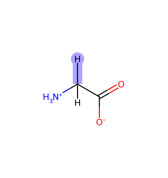
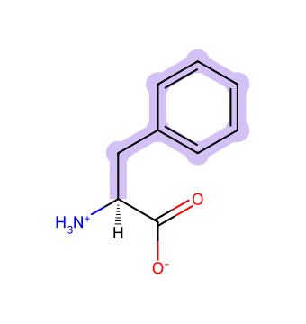
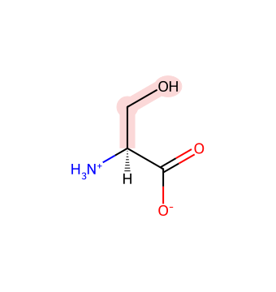
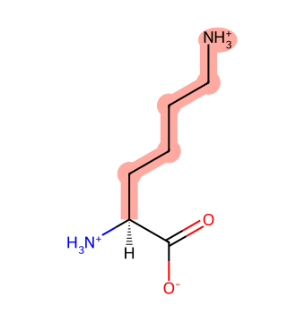
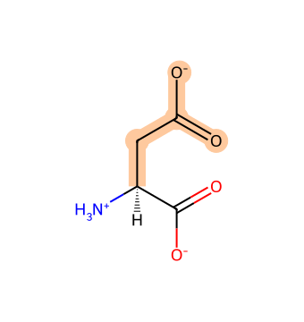
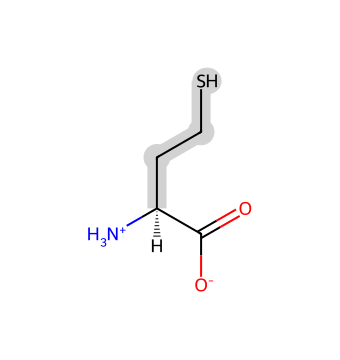

Los 20 aminoácidos de las proteínas comparten la misma estructura: un carbono α (Cα) unido a un grupo amino, a un grupo carboxilo, a un hidrógeno y a una cadena lateral (R). Salvo en la glicina, el Cα es quiral, y en las proteínas tiene siempre la configuración L. A pH fisiológico el grupo amino está protonado (–NH3+) y el carboxilo ionizado (–COO−): el aminoácido libre es un ion dipolar, y así se muestran los modelos.
Cuando los aminoácidos se unen para formar una proteína, el grupo amino y el carboxilo del Cα quedan en la cadena principal (el enlace peptídico se trata en otra página) y lo que distingue a cada residuo es su cadena lateral. Su tamaño y su forma, su polaridad, su carga y su capacidad de formar puentes de hidrógeno o enlaces covalentes deciden dónde se sitúa cada residuo y cómo se pliega la proteína: las cadenas apolares se agrupan en el interior, las polares y cargadas quedan en contacto con el agua, y algunas, como la glicina y la prolina, condicionan la forma de la propia cadena.
Elige un aminoácido en el desplegable de cada familia. Todos los modelos están a la misma escala y con la misma orientación: el grupo amino a la izquierda, el carboxilato a la derecha y la cadena lateral hacia arriba. Cadena lateral atenúa el resto de la molécula; Grupos polares marca los átomos de la cadena lateral que forman puentes de hidrógeno o llevan la carga; Cα lo colorea de naranja. En la fórmula, la cadena lateral está sombreada con el color de su familia.
Cadenas laterales hidrocarbonadas (en la metionina, con un tioéter) que ni tienen carga ni forman puentes de hidrógeno. En el agua tienden a agruparse por el efecto hidrofóbico, y por eso se concentran en el interior de las proteínas solubles, donde forman el núcleo que estabiliza el plegamiento (véase Hidrofobicidad), y en los segmentos que atraviesan las membranas. La glicina y la prolina son casos especiales: importan menos por su hidrofobicidad que por cómo condicionan la conformación de la cadena.

La cadena lateral es un solo átomo de hidrógeno: es el aminoácido más pequeño y el único sin carbono quiral. Sin una cadena lateral que choque con el resto de la molécula, la glicina admite giros que no permite ningún otro aminoácido; por eso da flexibilidad y aparece en giros cerrados y bucles, y desestabiliza la hélice α. Su tamaño permite empaquetamientos muy compactos: en el colágeno ocupa una de cada tres posiciones, en el centro de la triple hélice, donde no cabe otra cadena lateral.
Anillos aromáticos planos y voluminosos. La fenilalanina es apolar; la tirosina (–OH) y el triptófano (N–H del indol) tienen además un grupo que forma puentes de hidrógeno, lo que los sitúa a menudo en zonas de transición entre el interior y la superficie de la proteína. Los anillos se apilan entre sí y atraen cationes (interacción catión-π). La tirosina y el triptófano absorben luz ultravioleta a 280 nm, lo que permite medir la concentración de proteínas.

Cadena bencilo: un anillo de benceno unido al Cα por un metileno. Es voluminosa y muy hidrofóbica, y suele quedar enterrada en el núcleo de la proteína. Los anillos aromáticos se empaquetan entre sí (apilamiento π) y su nube de electrones π puede atraer cationes, como el grupo amino de la lisina (interacción catión-π). Absorbe poco a 280 nm.
Tienen grupos hidroxilo, tiol o amida que forman puentes de hidrógeno con el agua y con otros grupos de la proteína, pero no tienen carga a pH fisiológico. Suelen estar en la superficie y en los centros activos. La serina y la treonina son lugares de fosforilación y de O-glicosilación, y la asparagina de N-glicosilación. La cisteína es un caso aparte: es poco polar y forma puentes disulfuro.

Cadena hidroximetilo: pequeña y polar. El –OH forma puentes de hidrógeno con el agua y con otros grupos de la proteína, por lo que la serina suele estar en la superficie. Cuando la activa el entorno del centro activo, actúa como nucleófilo, como en las serina proteasas (tripsina, quimotripsina). Es diana de las serina/treonina quinasas y lugar de O-glicosilación.
Cadenas con un grupo nitrogenado que capta un protón. La lisina y la arginina están cargadas positivamente a pH fisiológico: se sitúan en la superficie, se rodean de agua y forman puentes salinos con el aspartato y el glutamato (véanse los de la hemoglobina) e interacciones con los fosfatos de los ácidos nucleicos. La histidina, con un pKR cercano a 6, está mayoritariamente neutra a pH 7, pero se protona con facilidad; se incluye aquí por esa capacidad.

Cuatro metilenos terminados en un grupo amino ε. Con un pKR de 10,5, está protonada (–NH3+) a pH fisiológico. La cadena hidrocarbonada puede quedar en parte enterrada mientras la carga del extremo queda en el agua; con ella forma puentes salinos con el aspartato y el glutamato y se une a los fosfatos del DNA. El grupo ε-amino se modifica mucho: acetilación (histonas), metilación, ubiquitinación y unión covalente de coenzimas como la biotina o el lipoato (véase el brazo lipoilo de la piruvato deshidrogenasa).
Cadenas con un grupo carboxilo de pKR bajo (3,7–4,3): a pH fisiológico están ionizadas como carboxilatos y tienen carga negativa, por lo que se nombran como aspartato y glutamato. Junto con las básicas, son las cadenas más hidrofílicas y se sitúan en la superficie. Forman puentes salinos con la lisina y la arginina, unen cationes metálicos (Ca2+, Mg2+) y actúan como ácidos o bases en la catálisis. Sus amidas son la asparagina y la glutamina.

Cadena carboxilato (–CH2–COO−). Con un pKR de 3,7, a pH fisiológico está ionizada y tiene carga negativa. Es muy hidrofílica y aparece en la superficie y en los giros. Forma puentes salinos con la lisina, la arginina y la histidina, une cationes como el Ca2+ y el Mg2+ y actúa en la catálisis ácido-base, como en las aspartil proteasas. El modelo muestra la forma ionizada.
Tienen el mismo Cα con sus grupos amino y carboxilo, pero no tienen codón: no se incorporan a las proteínas durante la traducción. Son intermediarios metabólicos y se incluyen para comparar, porque cada uno se diferencia de un aminoácido proteico en un solo metileno o en un solo grupo.

Homóloga de la cisteína, con un metileno más (–CH2–CH2–SH). Es un intermediario del ciclo de la metionina: se forma tras las reacciones de metilación de la S-adenosilmetionina y vuelve a metionina (con folato y vitamina B12) o se convierte en cisteína. La metionil-tRNA sintetasa la confunde a veces con la metionina, pero corrige el error ciclándola a homocisteína tiolactona, lo que impide que se incorpore a las proteínas. El aumento de homocisteína en sangre (hiperhomocisteinemia) se asocia a riesgo vascular.
Mr y pKR de los aminoácidos libres (para los no proteicos, Mr calculada a partir de su fórmula), según Nelson y Cox; el pKR de un residuo dentro de una proteína puede desplazarse según su entorno. Índice de hidropatía de Kyte y Doolittle: valores positivos, más hidrofóbico. Las fórmulas se han dibujado a partir de los mismos modelos 3D, que están en su estado de protonación a pH fisiológico.